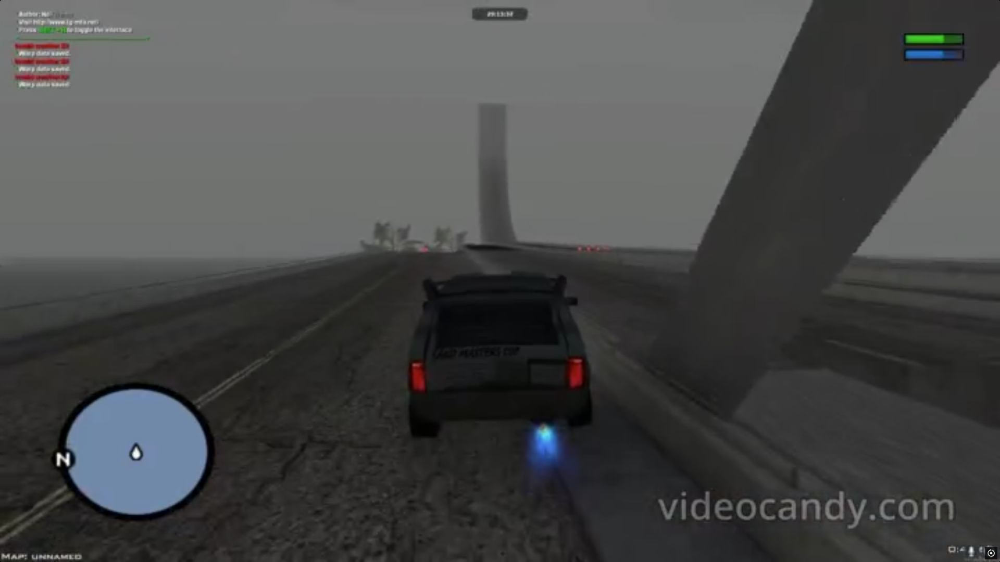
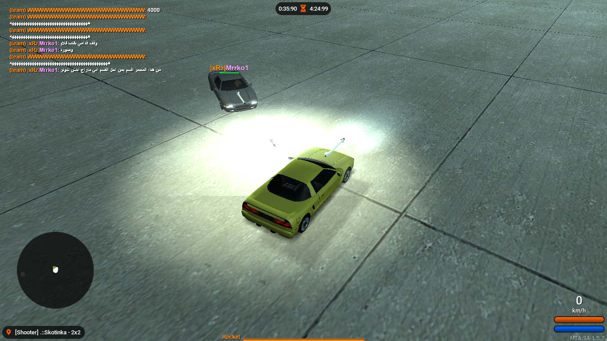

DreamGhostsDDDDDDD
Since 2012 – a friendship that outlived every game
Since 2012 – a friendship that outlived every game
DreamGhosts is simply a group of longtime friends who grew up together. What started as late-night laughs slowly turned into over a decade of beautiful memories, inside jokes, and a bond that never really faded. Even when life pulled us in different directions, we always found our way back to each other, and always will.
Each of us began our journey as a random newcomer, just exploring the game and trying our best to prove ourselves. Everyone wanted to win, to stand out, and to show they belonged. Eventually, the first two of us met and decided to team up, working together to take down other players and win matches in Destruction Derby. From there, the group slowly grew bigger and bigger, until we had more than 100 members over the years.
MTA:SA (Multi Theft Auto: San Andreas) is a multiplayer modification for Grand Theft Auto: San Andreas that allows players to create custom servers and game modes. People can build their own maps, scripts, and experiences such as racing, deathmatch, and many completely unique modes.
One of our favorite modes at the beginning of our journey was DD (Destruction Derby), where players fought using cars on maps built over the ocean. The goal was simple: knock other players off the platform and into the water and be the last driver standing.

We’re still alive, thankfully. But time moved on, and so did we. Some of us left to study, some got married and built families, and others became busy with work and responsibilities.
Every now and then we still gather, laugh, and relive those small beautiful moments together.
Some of us may not show up on the FFS server as often anymore, but we still remember those memories, and our hearts remain close no matter the distance.
Even if we’re not around as much, the connection never really faded.
We wanted this space to thank everyone we ever met along the way.
The ones who made us laugh, who stayed up too late with us, who shared wins, losses, and countless inside jokes.
You gave us memories we will never forget, and we hope we gave you a few smiles too.
If you were part of this, even for one day, thank you.
These memories only exist because we shared them.
And if you're reading this years from now, we were here.
Still haunting. Still laughing.